In this recipe, we will show how to REST-enable an existing service. We will reuse the CRM mock service used in Chapter 1, Creating a Basic OSB Service, but instead of exposing it as a SOAP-based web service as shown in Chapter 1, Creating a Basic OSB Service; we will expose it as a RESTful web service.
For that we first implement a business service that wraps the SOAP-based web service of the CRM system (a soapUI mock service). Then we create a proxy service using the HTTP transport and conditionally executing an action based on the HTTP method passed by the consumer:
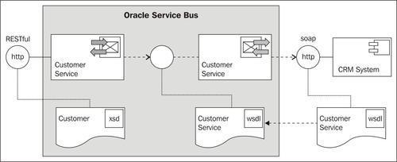
Import the SoapUI project CustomerServiceCRM-soapui-project.xml from the location \chapter-5\getting-ready\exposing-restful-service\soapui into your SoapUI. Start the mock service CustomerServiceSOAP MockService.
Import the base OSB project containing the right folder structure and the necessary XQuery transformations into Eclipse from \chapter-5\getting-ready\exposing-restful-service.
We will start with the business service, which will wrap the SOAP-based web service of the CRM system (the soapUI mock service).
In Eclipse OEPE, perform the following steps:
business folder of the exposing-restful-service project, create a new business service and name it CustomerServiceCRM. CustomerServiceCRM.wsdl from the wsdl folder and select the CustomerManagementSOAP (port). http://localhost:8088/mockCustomerServiceSOAP.Now, we can create the proxy service that will expose the RESTful interface. In Eclipse OEPE, perform the following steps:
proxy folder create a new proxy service and name it CustomerService. /exposing-restful-service/CustomerService. MethodBranch into the Name Field<XPath> link. ./ctx:transport/ctx:request/http:http-method/text() into the Expression field and click OK.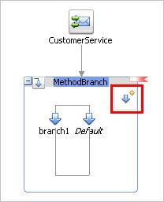
GET into the Label field.'GET' (don't forget the quotes) into the Value field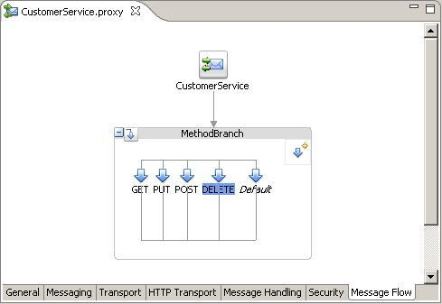
We have now created the basic structure of our RESTful service with the four HTTP methods representing the CRUD operations. Let's now implement each of the four operations. We start with the GET method, which will invoke the RetrieveCustomerByCriteria operation on the business service.
body into the In Variable and click on<Expression>. HttpGetToSoap.xq resource from the transformation folder and click OK. $inbound/ctx:transport/ctx:request/http:query-string/text() into the Binding field of the queryString variable and click OK. SoapToHttpGet.xq resource from the transformation folder and click OK. $body/cus:RetrieveCustomerByCriteriaResponse into the Binding field of the retrieveCustomerByCriteriaResponse1 variable. cus into the prefix and http://www.crm.org/CustomerService/ into the URI field.'text/xml; charset=utf-8' into the Set Header to field of the Action part. Content-Length into the field to the right of it. string-length($body) into the Set Header to field of the Action part. fn-bea:dateTime-to-string-with-format("E, dd MMM yyyy hh:mm:ss",fn:current-dateTime()) into the Set Header to field of the Action part.'UTF-8' into the Set Header to field of the Action part. Allow into the field to the right of it.'GET, POST, PUT, DELETE' into the Set Header to field of the Action part: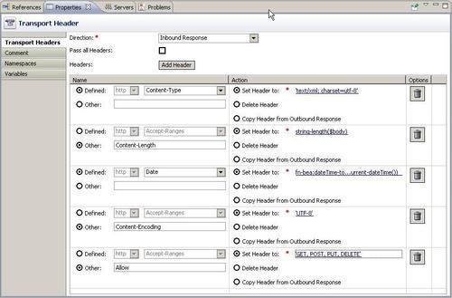
We have completed the implementation of the GET operation and the flow should look as shown in the following screenshot:
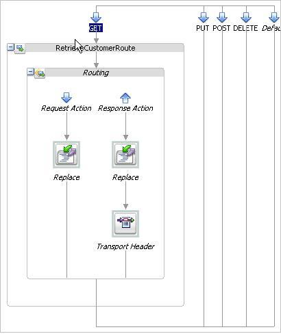
Next let's implement the PUT method, which will invoke the UpdateExistingCustomer operation on the business service.
UpdateExistingCustomerRoute. HttpPutToSoap.xq resource from the transformation folder and click OK. $body/cus1:Customer into the Binding field of the customer1 variable. cus1 into the prefix and http://www.somecorp.com/customer into the URI field.<status> <code>OK</code> <message>record updated</message> </status>
Next, let's implement the POST method, which will invoke the CreateNewCustomer operation on the business service.
CreateNewCustomerRoute.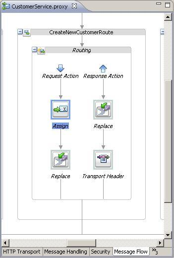
$body into the Expression field. origRequest into the Variable field. HttpPostToSoap.xq resource from the transformation folder and click OK. $body/cus1:Customer into the Binding field of the customer1 variable. cus1 into the prefix and http://www.somecorp.com/customer into the URI field. SoapToHttpPost.xq resource from the transformation folder and click OK. $body/cus:CreateNewCustomerResponse into the Binding field of the createNewCustomerResponse1 variable. $origRequest/cus1:Customer into the Binding field of the customer1 variable and click OK.Last but not least, let's implement the DELETE method, which will invoke the DeleteExistingCustomer operation on the business service.
DeleteExistingCustomerRoute. HttpDeleteToSoap.xq resource from the transformation folder and click OK. $inbound/ctx:transport/ctx:request/http:query-parameters/http:parameter/@value[$inbound/ctx:transport/ctx:request/http:query-parameters/http:parameter/@name='id'] into the Binding field of the id variable and click OK. record deleted and click OK.Now we have implemented all required HTTP methods for the CRUD operations. But there are two other HTTP methods (OPTIONS and HEADER), which we won't need and which will trigger the default branch. Therefore, we will raise an error to communicate that these methods are not supported.
NotSupportedMethodPipeline. RaiseErrorStage. NOT_SUPPORT_HTTP_METHOD into the Code field and Unsupported HTTP Method into the Message field.The completed message flow definition is shown in the following screenshot:
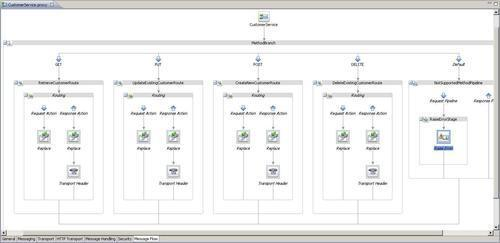
Now let's test our RESTful service. There are multiple ways for testing a RESTful service.
For testing the GET method, we can use a Web browser and enter the following URL: http://localhost:7001/exposing-restful-service/CustomerService?id=100:
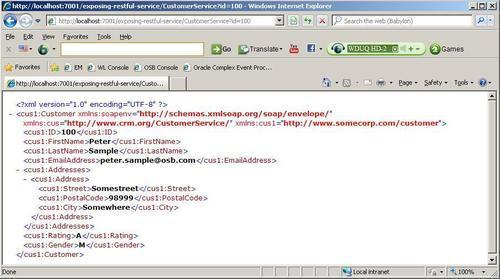
For testing the other implemented HTTP methods, we can use the Service Bus console.
To test the PUT method, perform the following steps in Service Bus console:
PUT into the http-method field.<cus1:Customer xmlns:soapenv="http://schemas.xmlsoap.org/soap/envelope/" xmlns:cus="http://www.crm.org/CustomerService/" xmlns:cus1="http://www.somecorp.com/customer"> <cus1:ID>1</cus1:ID> <cus1:FirstName>Peter</cus1:FirstName> <cus1:LastName>Sample</cus1:LastName> <cus1:EmailAddress>peter.sample@osb.com</cus1:EmailAddress> <cus1:Addresses> <cus1:Address> <cus1:Street>Somestreet</cus1:Street> <cus1:PostalCode>98999</cus1:PostalCode> <cus1:City>Somewhere</cus1:City> </cus1:Address> </cus1:Addresses> <cus1:Rating>A</cus1:Rating> <cus1:Gender>M</cus1:Gender> </cus1:Customer>
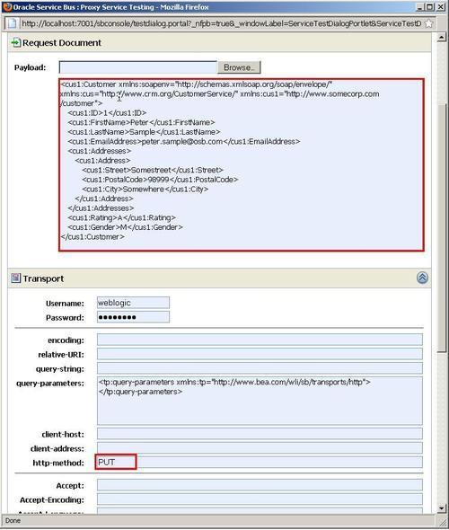
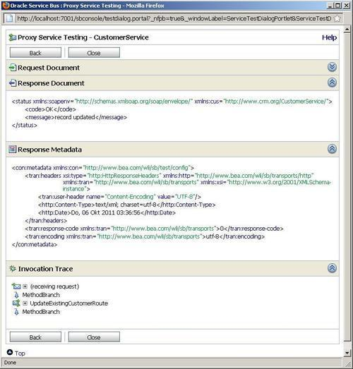
Testing the other HTTP methods is similar to the PUT, just replace the HTTP method and pass another message. To test the DELETE and GET, enter the value of the query string (that is, id=100) into the query-string field.
In this recipe, we created a REST interface for an existing SOAP service. We have mapped each of the available HTTP methods to one of the CRUD operations of the customer service.
The HTTP methods we implemented are PUT, POST, DELETE, and GET.
Working with the HTTP methods is similar to working with a WSDL with multiple operations. But we can't use an operational branch for handling the different methods; we have to use a conditional branch. The conditional branch decides which HTTP method has been passed and triggers the right behavior.
For each method we have to transform the message we get through the RESTful interface to the message the backend SOAP-based web service expects. For that, we have used the Replace action together with XQuery scripts.
For the GET and DELETE method, all the necessary values are passed in the query string, that is, in the URL of the request. For example, to read the customer with id=100, we have defined and used the following URL:
http://localhost:7001/exposing-restful-service/CustomerService?id=100
The request URL will end up in the $inbound variable, the part with the information about the request is shown here:
<con:transport> <con:uri>/exposing-restful-service/CustomerService</con:uri> <con:request> <tran:headers> <http:Content-Type>text/plain; charset=utf-8</http:Content-Type> </tran:headers> <tran:encoding>utf-8</tran:encoding> <http:query-string>id=100</http:query-string> <http:query-parameters> <http:parameter name="id" value="100"/> </http:query-parameters> <http:http-method>GET</http:http-method> </con:request> </con:transport>
We can see that the there is a separate element http:query-string only holding the value of the query string. Additionally there is a http:query-parameters collection with one element for each parameter.
In the implementation of the GET method, we have used the http:query-string element to pass the value of the query-string to the XQuery script by using the following XPath expression:
$inbound/ctx:transport/ctx:request/http:query-string/text()
The XQuery then uses the following FLOWER expression to create the criteria structure to be passed to the SOAP web service of the CRM system.
<criterias>
{
for $nameValue in fn:tokenize($queryString,"&")
return
<criteria>
<criteriaField> { fn:substring-before($nameValue,'=') }
</criteriaField>
<criteriaValue> { fn:substring-after($nameValue,'=') } </criteriaValue>
</criteria>
}
</criterias>
The implementation of the DELETE method is using the http:query-parameters collection to retrieve the value of the id parameter using the following expression:
$inbound/ctx:transport/ctx:request/http:query-parameters/http:parameter/@value[$inbound/ctx:transport/ctx:request/http:query-parameters/http:parameter/@name='id']
For the PUT and POST method, the message is passed as an XML fragment, which will end up in the $body variable in the message flow. The following screenshot shows the content of the $body for the PUT request when logged through a Log action.
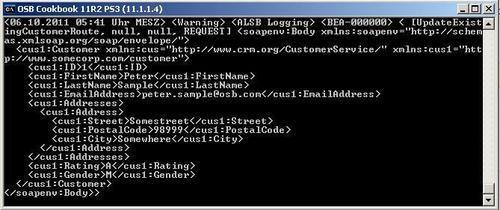
In the previous recipe, we used the query string part of the URL to pass the values to the GET and DELETE method. Another way of passing these values is as so-called clean URLs, which are purely structural URLs that do not contain a query string but instead define the path of the resource through the URL. So instead of using the following URL for the GET:
http://localhost:7001/exposing-restful-service/CustomerService?id=100
we could use a clean URL, such as this one:
http://localhost:7001/exposing-restful-service/CustomerService/id/100
Even if the request URL is longer, the existing proxy listening on Endpoint-URI /exposing-restful-service/CustomerService will still be triggered. The interesting part of the $inbound variable in this case would hold the following values:
<con:transport> <con:uri>/exposing-restful-service/CustomerService</con:uri> <con:request> <tran:headers> <http:Content-Type>text/plain; charset=utf-8</http:Content-Type> </tran:headers> <tran:encoding>utf-8</tran:encoding> <http:relative-URI>id/100</relative-UR> <http:http-method>GET</http:http-method> </con:request> </con:transport>
We can see that the part of the path after the Endpoint-URI of the proxy can be found in the http:relative-URI element. Using a tokenize function, it's easy to access the different values, for example, for the value of the id we could use:
fn:tokenize($inbound/ctx:transport/ctx:request/http:relative-URI/text(),'/')[2]